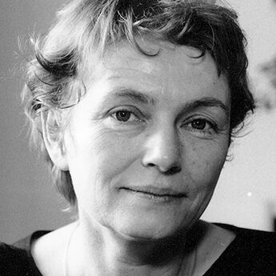

1:05:39 · 7 OPERE
L’epoca della conoscenza strabiliante.
Il filo del discorso
Il video interroga l’idea di vivere in un’epoca della conoscenza: saper usare strumenti, sostiene Dr Divago, non equivale a saper giudicare. Horkheimer e la ragione strumentale introducono una critica dell’adattamento sociale, poi sviluppata attraverso fotografie, vignette, consumo e comunicazione politica. Questi esempi sono argomenti del relatore, non diagnosi delle persone raffigurate o misure dell’intelligenza collettiva. Una parte importante del percorso riguarda la costruzione dei messaggi. Il manifesto di Uncle Sam e il precedente britannico mostrano il rapporto fra immagini, comandi e persuasione; un trafiletto su un episodio sardo diventa occasione per discutere grammatica ed etichette giornalistiche. La scheda riscontra l’originale ANSA e distingue la critica del linguaggio dalla prova di intenzioni intimidatorie. Mantiene inoltre aperte le attribuzioni non identificabili dalla trascrizione, senza dedurre autori da fotografie o titoli da nomi isolati. Il passaggio alla pandemia richiede una distinzione fra domande legittime e conclusioni dimostrate. Confrontare mortalità differenti è possibile, ma richiede indicatori e popolazioni comparabili. Un candidato vaccinale in sviluppo non è un medicinale già autorizzato; una morte successiva a un trattamento non ne dimostra automaticamente la causa e non va neppure esclusa dall’indagine. I grafici e le percentuali mostrati nel video, senza fonti e controlli sufficientemente identificati, non permettono l’inferenza causale che il relatore suggerisce. La sezione sulla logica contiene un errore che non viene riprodotto come insegnamento valido. Da P implica Q non segue in generale Q implica P: la proposizione necessariamente equivalente è la contrapposta: se non Q allora non P. L’equivalenza fra essere pari ed essere divisibile per due vale per quel particolare esempio e non dimostra la regola generale. Questo chiarimento applica al discorso stesso l’esigenza di controllo razionale che esso rivendica. Il finale collega sorveglianza, giustizia e responsabilità individuale. Le parole attribuite a Bärbel Bohley sono documentate come ricordo pubblicato da Chaim Noll nel 2019 di una conversazione del 1991, non come testo certificato del 1990. Il richiamo a Schleif introduce una critica del sistema giudiziario, senza trasformarla in sentenza o consiglio legale universale. Le attribuzioni incerte e i limiti dei riferimenti disponibili sono indicati nella scheda.
I libri nel discorso

Eclisse della ragione. Critica della ragione strumentale
Identificazione probabile
Copertina: Einaudi, Biblioteca Einaudi, 2000, traduzione di Elena Vaccari Spagnol, ISBN 9788806154370. Il titolo è anche catalogato con la variante Eclissi; la copertina acquisita reca Eclisse. Originale inglese Eclipse of Reason, 1947.
Copertina autentica Einaudi bianca con fascia blu, autore, titolo e sottotitolo leggibili. Non è la copertina del diverso Crepuscolo. Il collegamento all’editore Bloomsbury verifica l’opera originale, mentre la copertina italiana proviene da IBS.
Horkheimer e instrumentelle Vernunft espliciti, titolo non pronunciato: collegamento probabile all’opera già presente.
Passaggio 1:35 ↗ · Fonti e libro ↗I Want You for U.S. Army: Nearest Recruiting Station
Manifesto originale del 1917, Library of Congress: Library of Congress · originale del 1917
Facsimile autentico e intero del manifesto conservato alla Library of Congress, record 96507165, file ppmsc.03521. È un manifesto storico, non una copertina di libro. Titolo, firma e margini originali sono visibili. La data e l’identificazione sono quelle del catalogo primario, non di una ristampa commerciale.
Manifesto del 1917, Uncle Sam e James Montgomery Flagg nominati e discussi.
Passaggio 15:19 ↗ · Fonti e libro ↗
Britons: Lord Kitchener Wants You. Join Your Country’s Army! God Save the King
Identificazione probabile
Manifesto britannico del 1914, da fotografia IWM: Imperial War Museum · documento del 1914, copia digitale documentata
Riproduzione del manifesto Kitchener, fotografia IWM Q 48378A, da Wikimedia Commons. L’opera è verificata indipendentemente nel catalogo Hoover Poster UK 473 e nel catalogo IWM Art. PST 2734. Riproduzione del manifesto dalla fonte indicata.
Modello britannico precedente con dito puntato descritto senza titolo completo: identificazione probabile, Kitchener distinto dal re.
Passaggio 15:26 ↗ · Fonti e libro ↗
La ballata delle madri
Copertina della raccolta: Garzanti · 2001
La ballata delle madri è contenuta in Poesia in forma di rosa. L’immagine mostra la raccolta Garzanti del 2001, con prefazione di Edoardo Esposito, non un volume autonomo della poesia né l’edizione del video.
Pasolini e titolo pronunciati esplicitamente nel commento sui giornalisti.
Passaggio 21:49 ↗ · Fonti e libro ↗Travestito da pecora e senza mascherina, show in un market
Identificazione probabile
Copertina: ANSA · illustrazione originale del trafiletto, 10 marzo 2021
Immagine originale collegata al trafiletto ANSA: due fotogrammi affiancati del travestimento nel negozio, scaricati e conservati nella composizione della pagina. Non è una copertina libraria né una riproduzione della pagina di quotidiano mostrata nel video. Provenienza ANSA indicata; non si aggiungono nome o diagnosi della persona fotografata, né si inventa l’identità del fotografo.
Titolo e corpo letti corrispondono alla notizia originale ANSA; ripubblicazione specifica non identificata.
Passaggio 22:11 ↗ · Fonti e libro ↗
Bärbel Bohley: Die Frau, die es voraussah
Identificazione probabile
Copertina: Ritratto documentario di Bärbel Bohley · dissidenten.eu / Bundesstiftung Aufarbeitung
Ritratto autentico di Bohley pubblicato nella voce biografica dell’archivio dissidenten.eu, progetto della Bundesstiftung zur Aufarbeitung der SED-Diktatur; non copertina libraria e non fotografia di Chaim Noll. Noll attribuisce a dissidenten.eu l’immagine del suo articolo; non è accertata la corrispondenza con l’immagine qui riprodotta. Serve come illustrazione documentaria dichiarata del soggetto del ricordo. Data e fotografo non desunti dalla sol’immagine.
Passo attribuito a Bohley corrispondente al ricordo di Noll 2019, conversazione 1991: fonte del passo probabile, non documento contemporaneo 1990.
Passaggio 57:12 ↗ · Fonti e libro ↗Urteil: ungerecht. Ein Richter deckt auf, warum unsere Justiz versagt
Identificazione probabile
Copertina: riva · ottobre 2019, cartaceo ISBN 9783742311504
Copertina autentica in alta risoluzione dal collegamento 2D ufficiale del catalogo Münchner Verlagsgruppe/riva. Copertina con autore, titolo, sottotitolo e marchio riva. Edizione bibliografica riscontrata ma non assegnata con certezza alla copia mostrata nel video.
Schleif nominato e libro descritto come testo sulle sentenze ingiuste. Titolo non pronunciato; identificazione probabile dal catalogo 2019.
Passaggio 1:02:15 ↗ · Fonti e libro ↗